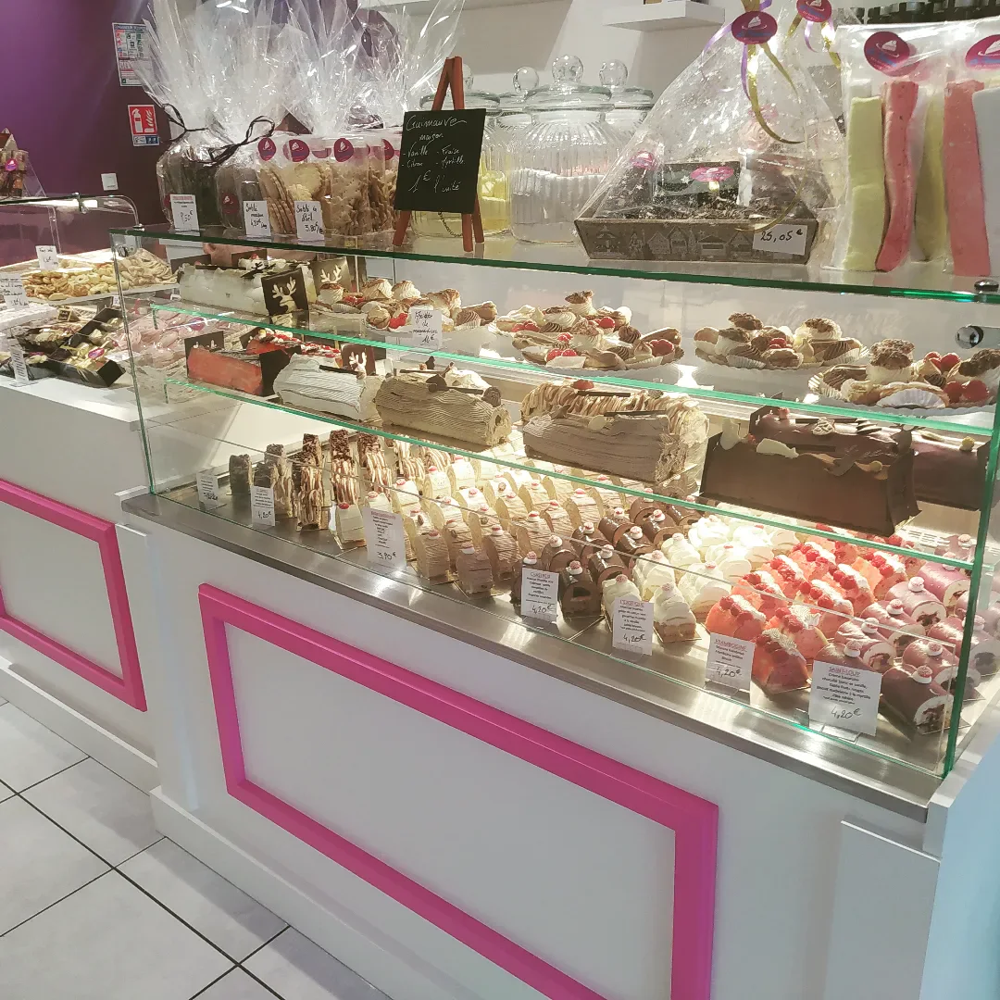

« Vraiment superbe pâtisserie. Tout est bon : le chocolat maison, la guimauve… et les gâteaux. Hmmm, le tiramisu ! Très bien servi par le chef. »
La maison
Un artisan, un atelier
Yohann Girard — pâtissier, chocolatier, glacier et boulanger. Installé au 7 rue des Ramacles depuis novembre 2017.
0Novembre 2017 · ouverture rue des Ramacles
4,9/5★★★★★Une cinquantaine d’avis Google
0

maison
Une pâtisserie générale au sens plein : entremets, tartes, gâteaux d’anniversaire et pièces montées sur commande, chocolats fins, glaces artisanales, confiseries — et le pain, au levain et en tradition, avec des farines soigneusement sélectionnées. Pas de sous-traitance : ce qui est en vitrine a été fait ici, par lui.
Une journée à l’atelier
4 h 30
Le four
Les baguettes de tradition et les pains au levain partent en premier. La pièce est encore fraîche.
6 h
Les entremets
Montage à la poche, repos au froid, glaçage velours. Ce qui a été fait la veille sort de cellule.
9 h
La boutique ouvre
Vitrine dressée. Les premières commandes du jour se retirent — parfois passées la veille.
12 h 30
Pause
Fermeture jusqu’à 15 h. Le temps de couler le chocolat, de turbiner les glaces en été.
15 h
Réouverture
Jusqu’à 18 h 30. On prend les commandes de la semaine, on parle pièces montées.
Témoignages
Des clients conquis
« Gâteau d'anniversaire commandé à peine 24 h avant, et qui était excellent et magnifique ! Je recommande fortement. »
« Les réalisations de ce pâtissier sont les meilleures que j'ai mangées. Desserts parfaitement équilibrés, jamais écœurants. Un sans-faute. »
« Superbe prestation pour un mariage de 120 convives. Mignardises excellentes, support créé sur mesure. Rapport qualité-prix excellent. »
« 👑 La meilleure galette des rois d'Auvergne. Découverte au marché d'Aubière — la boutique est à quelques pas. »
« Tarte aux myrtilles délicieuse, brioche feuilletée aussi. Une tarte préparée à la dernière minute pour un anniversaire : tout le monde s'est régalé ! »
« Excellente tarte aux fruits rouges, myrtilles fraîches et framboises. Demandes spéciales réalisées sans souci. Très bons chocolats. »
« Gâteau d'anniversaire au chocolat commandé la veille pour le lendemain : excellent, nous nous sommes tous régalés ! »
« Un accueil des plus chaleureux par le pâtissier, qui a réalisé un gâteau magnifique et succulent malgré un thème très précis. »
Venez la goûter
7 rue des Ramacles 63170 Aubière